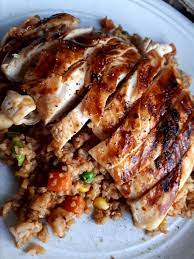

Grilled Asian Chicken

Description
Great for last-minute company or a quick dinner by rounding it out with a
baked potato and tossed salad.
Ingredients
- ¼ cup soy sauce
- 4 teaspoons sesame oil
- 2 tablespoons honey
- 3 slices fresh ginger root
- 2 cloves garlic, crushed
- 4 skinless, boneless chicken breast halves
Steps
-
In a small microwave-safe bowl, combine the soy sauce, oil, honey,
ginger root, and garlic. Heat in microwave on medium for 1 minute, then
stir. Heat again for 30 seconds, watching closely to prevent boiling.
-
Place chicken breasts in a shallow dish. Pour soy sauce mixture over,
and set aside to marinate for 15 minutes.
-
Preheat a grill for medium-high heat. Drain marinade from chicken into a
small saucepan. Bring to a boil, and simmer over medium heat for 5
minutes. Set aside for basting.
-
Lightly oil the grill grate. Cook chicken on the prepared grill 6 to 8
minutes per side, or until juices run clear. Baste frequently with
remaining marinade. Chicken will turn a beautiful golden brown.
Nutrition Facts
Per Serving: 217 calories; protein 25.7g; carbohydrates
10.6g; fat 7.6g; cholesterol 67.2mg; sodium 961.3mg.